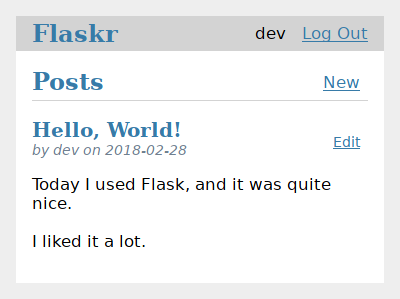

教程¶
本教程将指导您创建一个名为Flaskr的基本博客应用程序. 用户可以注册, 登录, 创建帖子, 编辑或删除自己的帖子. 您将能够在其他计算机上打包并安装该应用程序.
假设您已熟悉Python. Python文档中的“官方教程”是首先学习或复习的好方法.
虽然它旨在提供一个良好的起点, 但本教程并未涵盖Flask的所有功能. 查看 快速开始, 了解Flask可以做些什么, 然后深入了解文档以了解更多信息. 本教程仅使用Flask和Python提供的内容. 在另一个项目中, 您可能决定使用 扩展 或其他库来简化某些任务.

Flask is flexible. It doesn’t require you to use any particular project or code layout. However, when first starting, it’s helpful to use a more structured approach. This means that the tutorial will require a bit of boilerplate up front, but it’s done to avoid many common pitfalls that new developers encounter, and it creates a project that’s easy to expand on. Once you become more comfortable with Flask, you can step out of this structure and take full advantage of Flask’s flexibility.

教程项目在Flask存储库中可以作为示例使用, 如果您想在遵循教程时将项目与最终产品进行比较.
继续 项目布局.